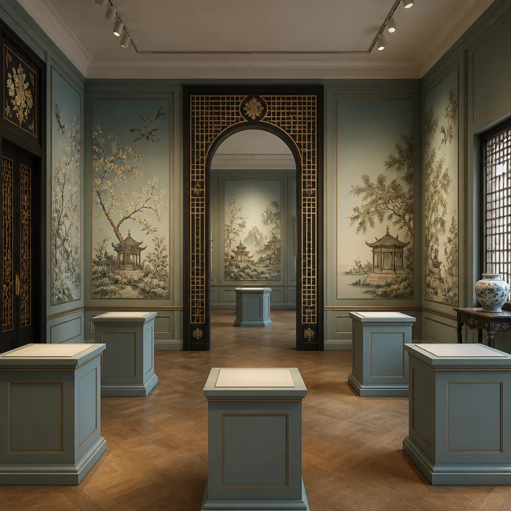
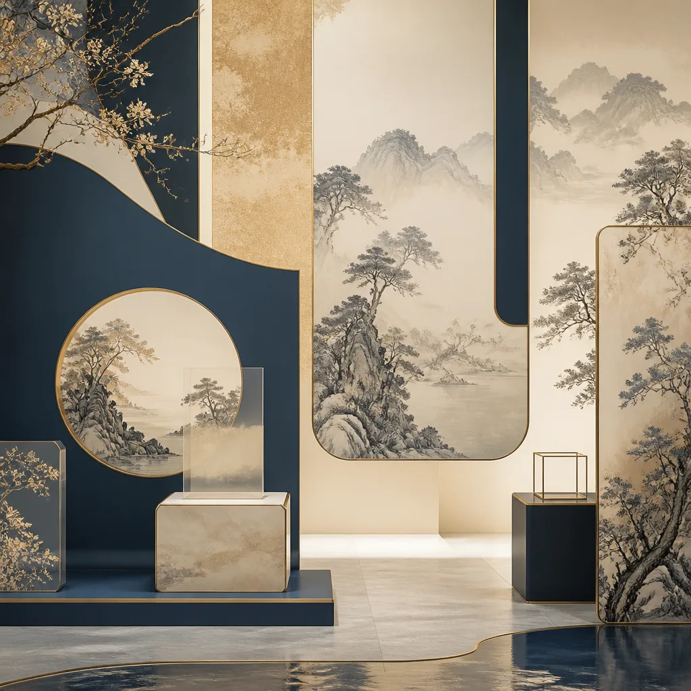
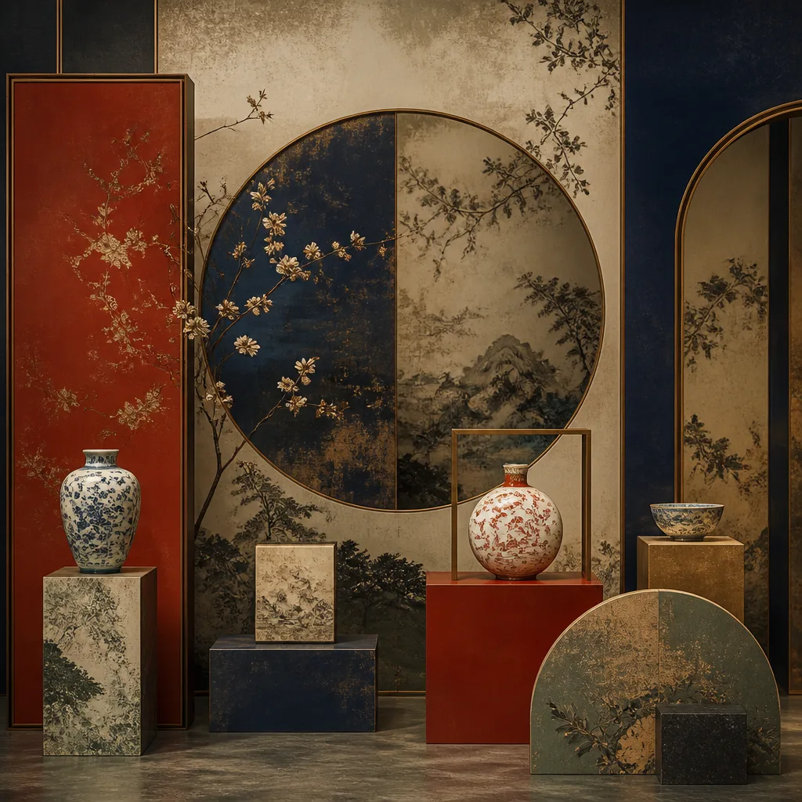
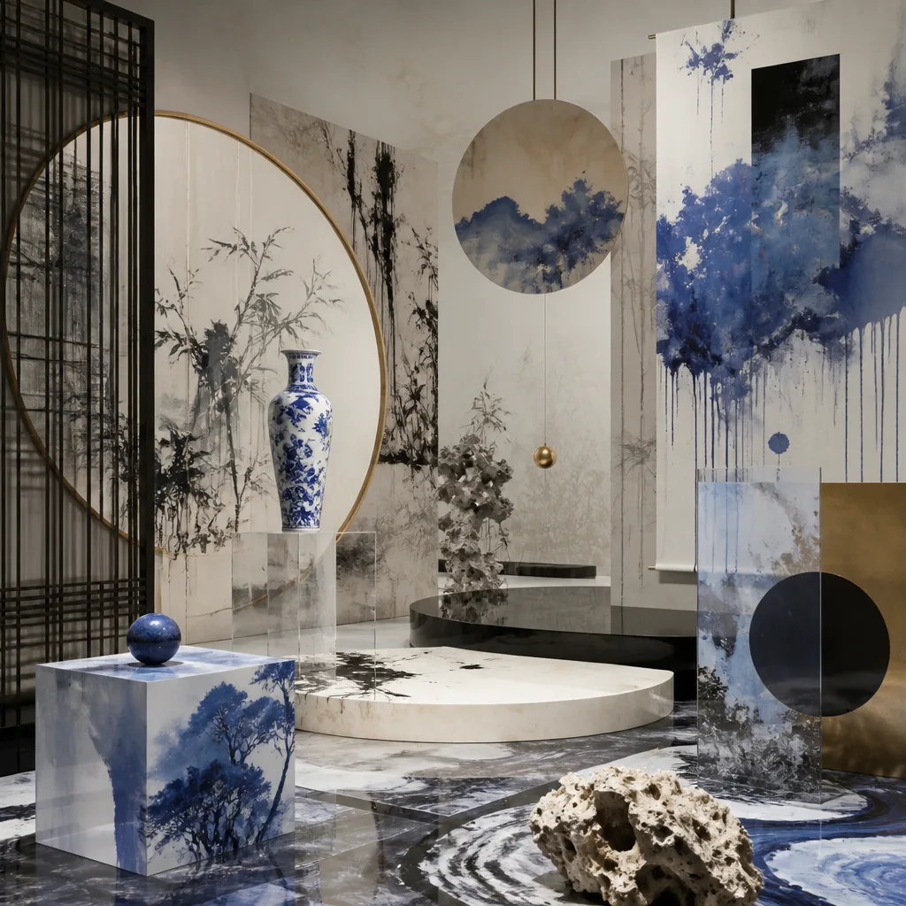
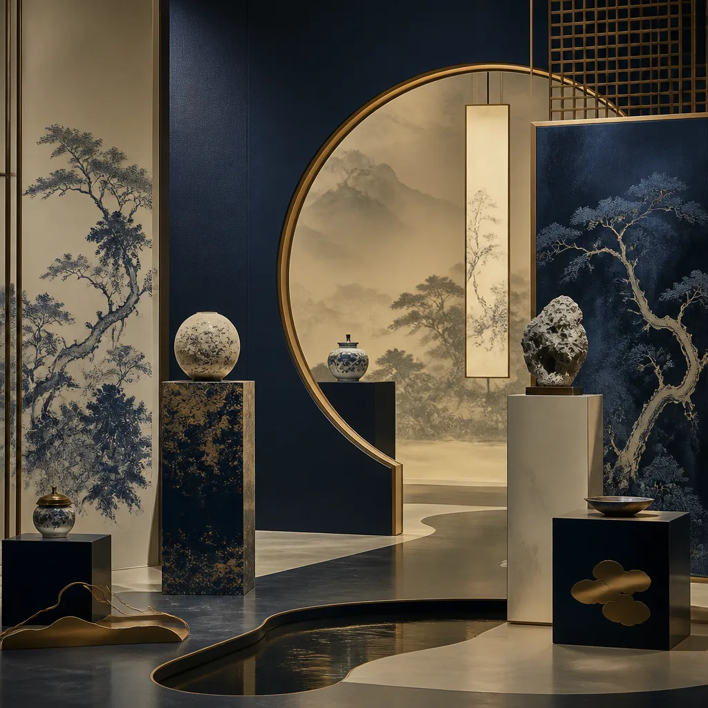
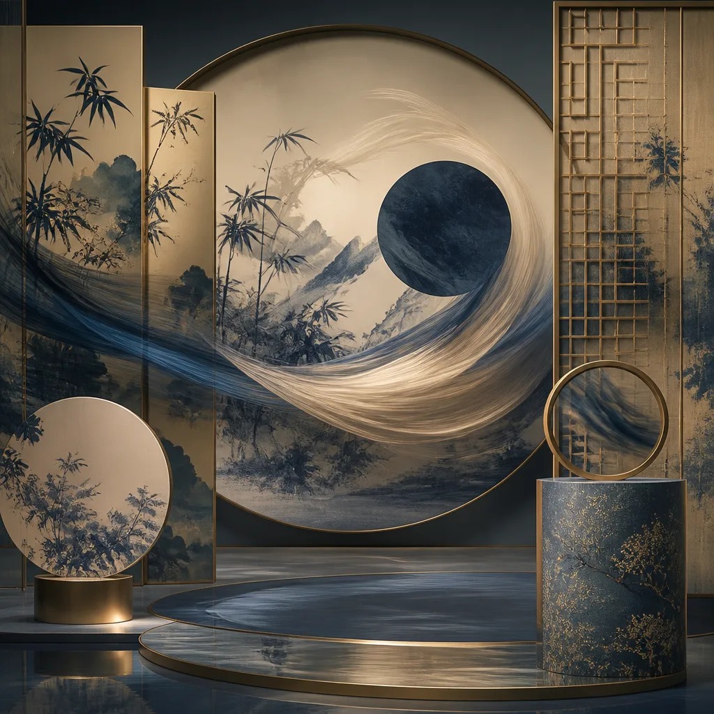

水光設計
aqualux 設計光譜
國潮．新生
aqualux 2026 設計光譜展 呈獻「中國風國潮」專題。 在傳統與現代的交織中，探尋東方美學的無限可能。 以硃紅點睛，墨色為骨，承宋體之雅，融水墨之韻，展現文化自信與設計新聲。
策展論述
Curatorial Statement「國潮．新生」不僅是一場設計展，更是對東方美學底蘊的深度叩問與當代詮釋。 在瞬息萬變的數字洪流中，我們回溯千年文脈，汲取宋代雅韻、水墨意境、傳統工藝之精髓， 以現代設計語彙重塑。此展旨在展現傳統與現代並非對立，而是相生相伴的兩股氣韻， 在設計光譜的兩端，共譜和諧新章。
我們深信，設計不僅是視覺的呈現，更是文化的載體。 本次展覽匯聚十二位設計師，他們以各自獨到的視角，將古典元素與當代思潮巧妙融合， 從 UI 介面的東方禪意、動態影像的詩意流轉，到實驗設計的哲學探索， 每一件作品都是一次跨越時空的對話，一次對未來東方設計的展望。
「取法乎上，得乎其中；取法乎中，得乎其下。」
—— 觀乎設計之本源，當求其高遠，方能臻於化境。
期盼觀者能在此次設計光譜展中，感受那份源自東方的沉靜力量與勃勃生機， 共同見證國潮設計如何在新時代綻放其獨有的光華，映照出一個更具深度與廣度的設計未來。
設計師名錄
Featured Designers
D_001
墨軒
Mo Xuan
UI / Minimal

D_002
雲鶴
Yun He
Motion / Animation

D_003
璃光
Li Guang
Experimental

D_004
宣紙
Xuan Zhi
Editorial / Calligraphy

D_005
錦繡
Jin Xiu
Retro / Pattern

D_006
雅石
Ya Shi
Cultural / Texture

D_007
青瓷
Qing Ci
Glassmorphism / Glaze

D_008
篆刻
Zhuan Ke
Terminal / Seal

D_009
丹青
Dan Qing
Sketch / Ink Painting

D_010
玲瓏
Ling Long
Interaction / Craft

D_011
龍紋
Long Wen
Guochao / Symbolism

D_012
飛白
Fei Bai
Film Grain / Brushwork
展覽場地
Venue Map
松山文創園區 5 號倉庫
雅築光影 · 藝境悠然
本次設計光譜展選址於松山文創園區 5 號倉庫，此空間經巧思改造， 融入中式園林設計理念，以木質格柵、月洞門、水墨壁畫勾勒東方意境。 柔和燈光與自然採光交織，營造出步移景異、光影流動的觀展體驗。 漫步其中，彷彿置身於現代與古典對話的詩意空間。
五大展區
Exhibition Zones
Z01
主流頻譜
Mainstream Frequency
探討當代設計趨勢如何吸納並轉化傳統元素，呈現市場主流的國潮設計應用。
位置: 5F-A1 · 展品: 5 件

Z02
時光殘響
Retro Echo
回溯歷史脈絡，展示經典復古設計在國潮浪潮中的回響與新生。
位置: 5F-A2 · 展品: 6 件

Z03
前衛實驗室
Avant Lab
聚焦前瞻性與實驗精神的國潮設計，探索未來美學的可能性。
位置: 5F-B1 · 展品: 6 件

Z04
文化光譜
Cultural Spectrum
呈現多元地域文化如何影響國潮設計，展現豐富的文化底蘊。
位置: 5F-B2 · 展品: 5 件

Z05
動態廳
Motion Hall
專注於動態影像與互動設計，以流動的姿態詮釋國潮之美。
位置: 5F-C1 · 展品: 15 件
講座排程
Event Schedule| 時間 | 主題 | 講者 | 地點 |
|---|---|---|---|
| 12.07 (Mon) 14:00 | 國潮設計的現代語境 | 墨軒 Mo Xuan | 演講廳 A |
| 12.09 (Wed) 10:30 | 水墨動畫的數位轉譯 | 雲鶴 Yun He | 演講廳 B |
| 12.11 (Fri) 16:00 | 傳統工藝的實驗設計 | 璃光 Li Guang | 演講廳 A |
| 12.13 (Sun) 13:00 | 漢字之美與編輯設計 | 宣紙 Xuan Zhi | 演講廳 B |
| 12.15 (Tue) 15:30 | 當代視覺中的復古圖騰 | 錦繡 Jin Xiu | 演講廳 A |
| 12.17 (Thu) 11:00 | 文化符號的交互設計 | 玲瓏 Ling Long | 演講廳 B |
票務資訊
Ticket Information
珍藏票券
玉佩銘文 · 展覽通證
本次設計光譜展票券設計，靈感源自傳統玉佩與牌匾， 以精緻雕工與古雅紋飾呈現。每張票券皆為獨一無二的藝術品， 不僅是入場憑證，更是值得珍藏的文化符碼，寓意吉祥，開啟您的設計之旅。
單日票
一日入場憑證
NT$ 480
每人 / 單日
- 展覽全區入場
- 限定紀念書籤
- 電子導覽手冊
全通票
展期無限次入場
NT$ 1,280
每人 / 全展期
- 展覽全區無限次入場
- 限定紀念書籤
- 電子導覽手冊
- 優先預約講座
貴賓票
專屬尊榮禮遇
NT$ 2,880
每人 / 全展期
- 展覽全區無限次入場
- 限定紀念書籤
- 電子導覽手冊
- 優先預約講座
- 雅集工坊體驗
- 專屬導覽服務